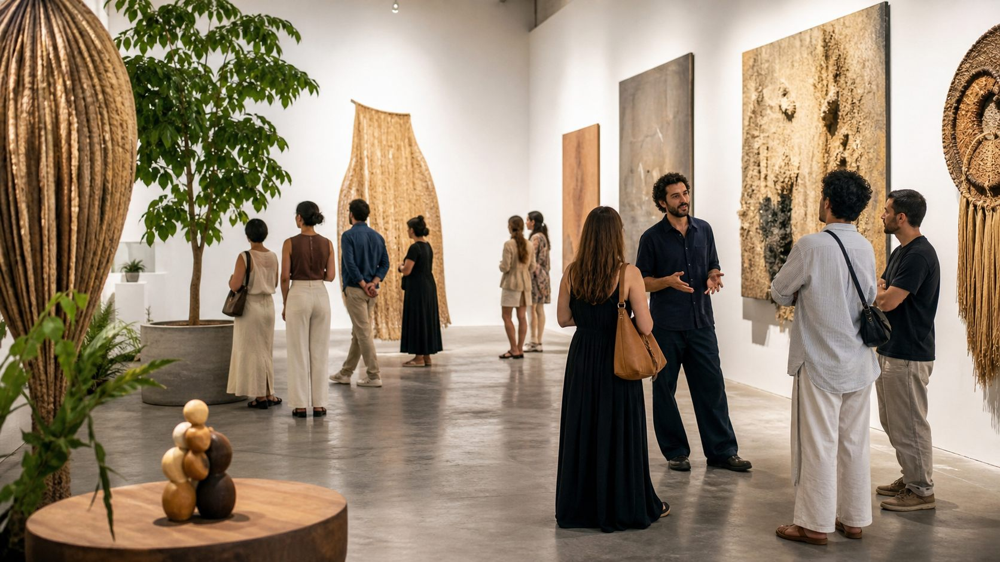

Cultura local
OCA Feira Cultural
Uma feira para a produção autoral encontrar a cidade: artistas, artesãos, criadores e público reunidos em torno de cultura, convivência e economia criativa.

Um espaço de encontro
OCA também é vitrine para quem cria.
Na plataforma, cada edição ganha seu formulário de inscrição, critérios de curadoria, lista de confirmados e orientações para os expositores selecionados.